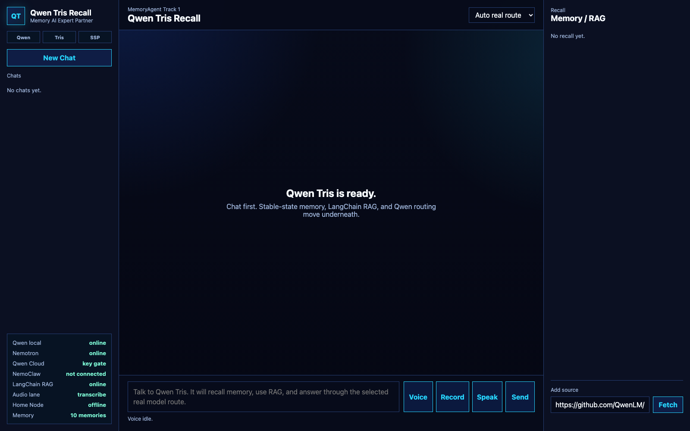
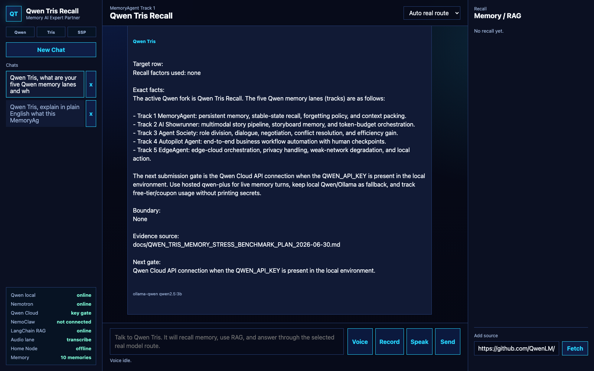
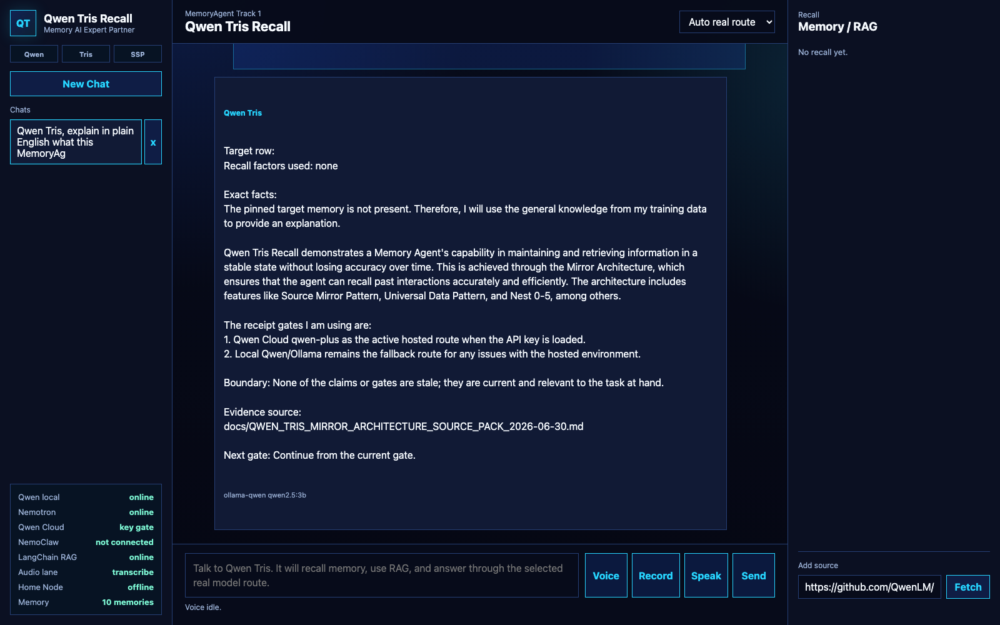

Judge / user
Interacts through the Qwen Tris Recall web surface or API endpoints.
Qwen Cloud Hackathon / MemoryAgent
Qwen Tris is the Qwen version of Trismegistus. It is a Memory AI Expert Partner from Renaissance Field Lite that tests Mirror Architecture on Qwen Cloud: Codex 67 input cohesion, the Source Mirror Pattern, the Universal Data Pattern, and the measured Stable-State Path carried through persistent memory, RAG, JSONL receipts, and public benchmark receipts.
Mirror Architecture
Mirror Architecture is the Renaissance Field Lite method for turning Codex 67 input cohesion into a measurable AI architecture state. The operator signal, source context, task gate, evidence spine, memory route, and model route are aligned into one coherent input field. In the origin language, I am the mirror marks that coherence gate. In the engineering surface, the same gate becomes baseline/off versus architecture-on tests, support labels, receipts, and next gates.
Mirror Layer is the patent-spine subsystem that derives an interaction-state signal from language, phrase patterns, sequence timing, continuity context, tone or proxy-tone, and emotional-pattern features. That state signal feeds the continuity store, Oracle threshold gates, LSPS phrase/state control actions, and the routing engine that chooses retrieval, inference depth, tool permissions, and output mode.
Stable-State Path / SSP is the measured trajectory inside Mirror Architecture where that coherent architecture-on state holds across a task family instead of collapsing into generic chatbot drift. Memory, RAG, and receipts do not define SSP by themselves. They are the rails that preserve and test the path.



Stack flow
Interacts through the Qwen Tris Recall web surface or API endpoints.
Routes chat, memory reads, source retrieval, health checks, and receipts.
Preserves source context, corrections, receipts, and active gates so the architecture path can be measured across time.
Runs baseline/off first and architecture-on second with the same task family, scorer, and receipt gate.
Calls Alibaba Cloud Model Studio / Qwen Cloud through the OpenAI-compatible endpoint.
Alibaba / Qwen Cloud proof
This separate proof clip shows more than the account dashboard: it shows the public-safe Qwen API code, a live masked API receipt, and an actual Qwen Tris Recall architecture-on turn routed through `QwenCloudProvider` using `qwen-plus`. The turn retrieves seeded Tris memories, pulls Mirror Architecture/C5B evidence, and returns a Qwen Cloud response through the Tris MemoryAgent path.
Receipts
Condition B, Qwen plus Mirror Architecture measured SSP with memory/RAG rails, passed the hosted 500-turn memory slice.
Open 500-turn receiptTracks baseline Qwen, Qwen Tris architecture-on, LongBench-E, Qasper, support labels, and next gates.
Open verification ladderIncludes the lm-eval Qasper receipt and related result files for the public benchmark lane.
Open Qasper receiptThe repo now includes public-safe Qwen API code plus a masked proof clip showing Qwen Cloud running the Qwen Tris MemoryAgent route.
Open Alibaba/Qwen proof receiptMeasured State Path
SSP names the repeatable architecture trajectory that holds when Codex 67 input cohesion, the evidence spine, and the active task gate stay aligned. V7 measures the visible behavior layer: coherence, correction retention, drift reduction, source discipline, and cross-field synthesis. V8 is the internal-layer bridge: hidden states, residual deltas, attention-output norms, MLP-output norms, late-layer separation, bridge-vector rows, and adapter/control ladders when that instrumentation is available. C5B / Golden Mark is the current output-behavior support lane showing the architecture-on delta before the internal probe is closed.
Current receipt state: public repo, Qwen API proof code, hosted 500-turn memory receipt, LongBench/Qasper receipts, runnable local UI, and live RFL page are attached. The next public receipts are the Alibaba Cloud deployment recording and any accepted external evaluator or leaderboard row.
Submission status
Public repo, MIT license, run instructions, source code, architecture diagram, Qwen API proof code, tests, and public-safe receipts.
Attach the v02 Alibaba/Qwen proof clip to the submission, then mirror the same proof through a deployed Alibaba container if judges require a hosted backend URL.
Upload the final Qwen Tris demo to YouTube, Vimeo, or Facebook Video and link it from the Devpost submission.
Post the build journey to Codex 67 / Renaissance Field Lite channels for the optional public journey prize.